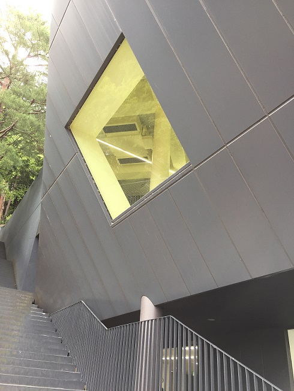
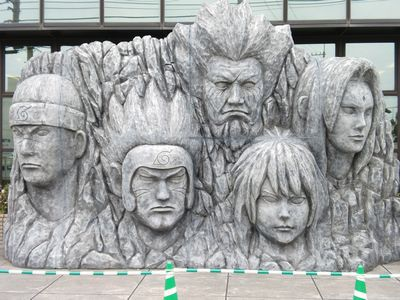

本格的に画像をいじるのは初めてだった。過去に趣味でibisPaint（スマホ版）を使って、
（クソ）コラ画像を量産するぐらいしか編集したことがなく、PC版Photo shopの操作に慣れるのが
大変だった。

階段から見上げた教室の写真に

アニメ・NARUTOに出てくる顔岩を貼っつけたい。

はじめに、顔岩の周りを削って、編集しやすいようにした。
貼る側の壁が斜めになっていて、顔岩を傾けるのに苦労した結果、
なんとも言えない出来になった。

白黒の方がしっくりくるのは気のせいだろうか